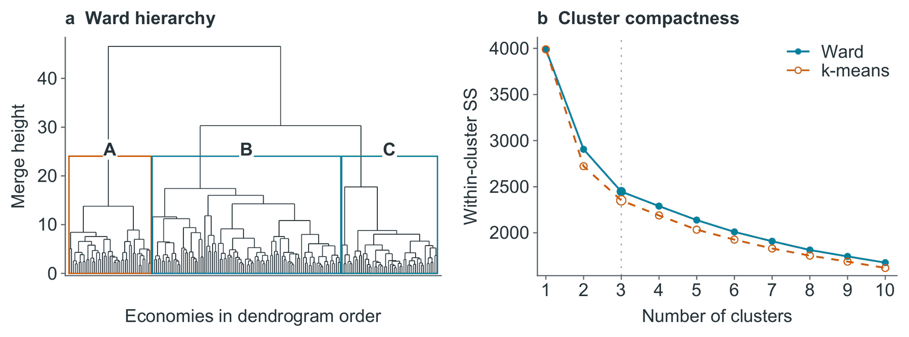

Bachelor of Commerce, Business Analytics
Weighted average mark 77.429, before Semester 2, 2026 results
Business Analytics student at Monash University, graduating June 2027
These four projects are told as a trail of decisions. For each step you can see what I chose, why I chose it and the evidence behind it.
The data were 489 months of turnover for clothing, footwear and accessory retailing in the ACT, from April 1982 to December 2022. The series has a sharp December peak that grows with the level, and two lockdown months far below anything earlier. Across three assignments and a final project, I had to decide how to transform it, how to judge accuracy and which model to trust.
Both options steadied the seasonal swing, so I kept the one whose output can be read: on a log scale, a change is a percentage change. The Guerrero value also leaned on the two lockdown months. On data to 2019 the method returned about minus 0.14.
Of the 48 test months, 36 fell in 2020 to 2022, the period with both lockdown outliers. One window can make two methods look equal or far apart. Cross-validation averages over 26 training sets and every horizon from 1 to 60 months.
The KPSS test rejected stationarity for log turnover, but not after one seasonal difference. The p-value was close to 5%, so a first difference was defensible too. I left it out because the textbook warns that unnecessary differences create false dynamics.
The automatic ARIMA had the best AIC but the worst test RMSE, so its extra terms improved the fit without improving the forecasts. AR(1) and AR(3) were less than 1% apart and swapped order in 2019. AIC can compare them because they share the same differencing, and it favoured AR(3) by 34.
In the final project, seasonal naive beat my models on the last 24 months. I showed why: the models absorbed the 2021 lockdown.
The studio wanted to know, before greenlighting a pitch, how likely it was to flop: to take less at the worldwide box office than its budget. I wrote the model using 3,208 past films. As coordinator, I also wrote the group brief and outline with shared rules, divided the work, organised the meetings, checked every task and merged the final report.
A flop is an ROI below 1, so the model must return a probability between 0 and 1. A linear model can go outside that range and a Poisson model is built for counts. I used logistic regression and fitted it twice: by maximum likelihood with glm and as a Bayesian model with brms.
The studio decides before release, so revenue, profit, audience scores and popularity were never predictors. I put budget in three bands because flops peak in the middle band, a curve that a straight line in log budget misses.
At 0.5 the model flagged no film at all, yet it showed its best accuracy by calling every film a success. A flag only sends a pitch back for review, while a missed flop costs its unrecovered budget, so catching flops came first.
My summary for the Head of Production says what the model can be trusted to say and what it cannot. It cannot promise that a pitch will succeed, and it never sees the script, the director, the release date or the marketing spend.
Our group studied 191 economies on 21 World Bank indicators, using factor analysis, multidimensional scaling and clustering. My section answered two questions: which economies belong together, and how many groups the evidence supports.
Single and complete linkage split off individual economies. Ward chooses each merge to keep the rise in the within cluster sum of squares (WSS) as small as possible.
A count was supported only if it passed all four: a larger gap in merge heights above the cut than below it, a fall in WSS of at least 10% that drops below 10% at the next split, agreement with k-means (adjusted Rand index of at least 0.60) and stability across random starts (at least 0.90).
The fourth split separates the six Gulf states, oil exporters that rely on migrant workers. It fails the height gap test, so I report them inside the high development group instead of as a group of their own.
I reran the grouping under other choices to see which economies move. Some do, so the groups support broad profiles, not fixed labels.
Most of the difference between the groups is about the level of development, so I described each group with medians of the observed indicators.

A consultancy's draft report on 9,999 Steam games ran without errors and looked polished, and an investor was about to act on it. Working as the investor's analyst, I traced each conclusion back to the step that produced it, proved the error in R and rebuilt the analysis.
The draft joined review and genre tables straight onto the games table, so each game was copied once for every review and tag, and the genre price averages were weighted by review counts. I collapsed each table to one row per game before joining.
About 82% of games had no critic score, and those games had far fewer reviews. The scores were missing because the games were less visible, so filling them with the mean would invent verdicts. I kept a flag instead.
Review counts swamped price in the distance calculation, so the draft's price tiers were really popularity tiers. I standardised both and chose four clusters at the elbow of the WSS plot.
A bag-of-words lexicon labelled one game's community toxic, but the reviews were sarcastic praise. I used LLM extraction in R to flag the sarcasm, then a RAG pipeline with Gemini embeddings to match games to the investor's brief by meaning instead of keywords.
Bachelor of Commerce, Business Analytics
Weighted average mark 77.429, before Semester 2, 2026 results
UEH International School of Business (UEH-ISB)
Dean's Scholarship. Credits transferred to Monash.
Sales Staff, VISSAN Joint Stock Company
Sold VISSAN products and generated VND 100 million in sales revenue each month.
Sydney FC data analytics team
Shortlisted twice and placed next in line.